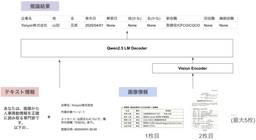

Sansan Tech Blog
https://buildersbox.corp-sansan.com/
Sansanのものづくりを支えるメンバーの技術やデザイン、プロダクトマネジメントの情報を発信
フィード

マルチプロダクトのモバイルエンジニア同士での知見共有を促す Mobile Tech Talk
Sansan Tech Blog
はじめに 技術本部 Sansan Engineering Unit Mobile Application Group の赤城です。 私たちのチームは、法人向け営業DXサービス「Sansan」のモバイルアプリ開発を主に担当しています。 一方、同じ会社でモバイルアプリを開発しているチームとして、名刺アプリ「Eight」のモバイルアプリ開発担当チームも在籍しています。 同じ会社ではあるものの、全く別の事業のプロダクト開発をしているため、普段の業務で関わる機会はそれほど多くありません。 同じ技術領域のエンジニアが同じ会社に在籍しているにもかかわらず、知見共有が進まないのは非常にもったいない機会損失です…
2日前

Claude CodeではじめるAgentic Coding入門 245
245
Sansan Tech Blog
Bill One Engineering UnitのPurchasing Groupでアーキテクトを務める豊田(@helloyuki_)です。今日は業務中に行っているAgentic Codingについて紹介したいと思います。 Agentic Codingとは 定義 Vibe Codingとの違い Claude Codeとは 定義と機能 特徴 IDE（IntelliJ）との統合 実務での利用事例 何をやらせてみたか どうやったか 学んだこと 探索空間を絞る Plan Modeは積極的に利用する docの整備を進める MCPサーバーの活用 作業が軌道にのるまで「手懐け」 Bill OneでのAI駆…
2日前

LVLMをローカル運用する際に、精度を保ちつつレイテンシをどこまで改善できるか(vLLM, Flash Attention, 量子化)
Sansan Tech Blog
はじめに Sansan 研究開発部の齋藤慎一朗です。 次のブログでは、本格的なLVLMの検証の前に、運用に必要な環境をどう見積もるかについて、メモリの観点で紹介しました。 buildersbox.corp-sansan.com 今回は、Fine-Tuningを行ったLVLMをローカル運用する際のレイテンシをどこまで改善できるかを検証したため、その手法と結果について共有します。 オフラインバッチ推論の前提での検証となります。 前提 利用するモデル Full Fine-TuningされたQwen/Qwen2.5-VL-7B-Instruct[^1]
3日前

本社じゃなくても挑戦できる —— 名古屋拠点研究開発部オープンセッション開催レポート
Sansan Tech Blog
こんにちは、技術本部研究開発部の高橋寛治です。 2025年6月11日（水）、Sansanの中部支店にて初のエンジニア向けイベント「本社じゃなくても挑戦できる —— 名古屋拠点研究開発部オープンセッション」を開催しました。 本記事では、イベントの様子を振り返りながら、名古屋で活躍するエンジニアの挑戦と働き方をご紹介します。 配布物
4日前

AI時代の挑戦型組織への変革：Sansanエンジニアリングの現在地と未来
Sansan Tech Blog
こんにちは。SansanのVPoE、大西です。 先日、Sansan技術本部で、全エンジニアが集まる半期総会が開催されました。今回のテーマは「AI時代の挑戦型組織へ」。私はこの場で、Sansanエンジニアリングの現在地と、これからの進化の方向について語りました。 本記事では、総会で私が伝えたかったメッセージを改めてまとめています。Sansanがいま、どのような組織文化と人材を求めているのか。そして、AI時代におけるエンジニアリングの価値をどのように再定義していこうとしているのか。その輪郭を、少しでも感じていただけたら嬉しいです。
11日前
「世界を変えるプロダクト」の実現へ Sansan技術本部 新CTO 就任インタビュー
Sansan Tech Blog
こんにちは、Sansan Tech Blog編集部です。今回は2025年6月にSansan株式会社のCTO（最高技術責任者。Chief Technology Officerの略）に就任した笹川に、就任の背景や考え、そして今後の展望についてインタビューしました。笹川のキャリアパスなどの情報を集めたページはこちらsansan-engineering.notion.site ――CTOに就任したことで、ご自身の中でどのような変化を感じていますか？ 実のところ、日々の業務やスタンスはこれまでと大きくは変わっていません。必要な人と人をつなげるなどといった日常の動きは、これまでも、これからも変わらないつも…
15日前
なぜ私たちは住所正規化エンジンをRustで"再発明"したのか？ - FFIによる多言語高速化と開発者体験の裏側
Sansan Tech Blog
Sansan Engineering Unit マスターデータグループ（データ戦略部門）の松本です。 私たちのチームは、「Activating Business Data」というミッションを掲げ、企業の活動の礎となる重要なデータ、いわゆる「マスターデータ」とその利活用という課題に、技術を駆使して向き合っている組織です。 さて、ビジネスデータを扱う上で「住所」は欠かせない情報です。 それは単に「モノを届ける場所」を示すだけではありません。
16日前
帳票VQAの舞台裏：どうやってモデルを育ててきたか
Sansan Tech Blog
こんにちは。研究開発部のMengsay Loemです。現在は、帳票から情報を抽出・構造化する「データ化技術」の研究開発に取り組んでいます。本記事では、Sansanにおける、Vision-Language Model（VLM）を用いた視覚的質問応答（VQA）による帳票からの情報抽出技術を紹介します。VLMをプロダクトで使えるレベルまで高めるために、どのように性能改善に取り組んできたか、その道のりと得られた知見を共有したいと思います。
19日前
My Contribution to Go (Golang)
Sansan Tech Blog
Hi, my name is Masanori Ikeda. Here, I’d like to introduce my contribution to Golang (hereinafter referred to as the “Go”). Developed Salesforce API Client in Go pkg.go.devI developed a Salesforce API Client in Go. This library includes all basic features like creating, updating, and deleting record…
20日前
Oktaをコードで管理するまで Terraform × AI によるIaC実践録
Sansan Tech Blog
はじめに こんにちは、Sansan株式会社 コーポレートシステム部の平野です。 普段はインフラエンジニアとして、社内インフラに関連する各種SaaSの設計・開発から運用まで担当しています。 前職ではSIerにて、クレジット業界向けシステムのSREエンジニアとして、システムの信頼性や運用性を高める仕事に携わっていました。 そのときに培った、プロダクト開発では当たり前になっているIaCや自動化の知見を、情シスというフィールドで生かせないかと考え、現在の業務にも積極的に取り入れています。今回のテーマにしたのは、社員の認証・認可まわりを担っているOktaの運用についてです。 担当領域の中でもインフラ・セ…
23日前
EightでStripeの3Dセキュア認証に対応した話
Sansan Tech Blog
名刺アプリ「Eight」でエンジニアをしている菅間（@sugamaan）です。今回はEightで展開している中小企業向け名刺管理サービス「Eight Team」にてStripeの3Dセキュア認証（以後3DSとする）に対応した話をしようと思います。 背景 Eight Teamでは決済システムにStripeを導入しています。 Stripeでは銀行振込機能を活用したり、トライアル機能を過去に実装しています。ご興味があれば是非ご覧ください。 buildersbox.corp-sansan.com buildersbox.corp-sansan.com Stripeは2025年3月末までに3DSの導入完…
24日前
新卒エンジニア向けに情報セキュリティ研修を行いました
Sansan Tech Blog
こんにちは。技術本部 情報セキュリティ部 CSIRTグループ所属の北澤です。Data Hubというプロダクトの開発組織から CSIRTグループのプロダクトセキュリティチームに異動してきて1年が経ちました。 4月21日にSansanでは初めてとなる新卒エンジニア向けの大規模な情報セキュリティ研修を行いました。今まで全社員共通のセキュリティ研修はありましたが、SQL InjectionやXSSなど、開発時に考慮すべき脆弱性対策に特化したエンジニア向け研修を行ったのは今回が初めてになります。本記事ではその研修の内容についてお伝えできればと思います。
24日前
2025年度 人工知能学会全国大会（第39回）参加報告
Sansan Tech Blog
こんにちは、Sansan株式会社 技術本部 研究開発部の田柳です。2025年5月27日（火）〜30日（金）の4日間、大阪国際会議場（グランキューブ大阪）にて開催された 2025年度 人工知能学会全国大会（JSAI2025）に参加してきました。弊社はプラチナスポンサーとして協賛し、大田尾・黒木・竹長・田柳・山内が現地参加しました。私自身、学生時代は経済学を専攻し、現在は契約書データのキーワード抽出技術の研究開発などに取り組んでいます。こうした機械学習系の学会への参加は今回が初めてで、多くの刺激を受けました。本記事では、印象に残ったセッションや発表、そして会場の雰囲気などをレポートします。 ブース…
25日前
Jamf Proをコード管理 - AIを活用したTerraform Providerの自作
Sansan Tech Blog
はじめに こんにちは、Sansan株式会社 コーポレートシステム部の坂尾です。社内システムやインフラに関連する設計・開発・運用を担当しています。 これまでの業務経験においてプロダクトの研究開発やアーキテクチャ設計などのテックリードをしており、現在はその経験を活かして社内の各種SaaSやMDMソリューションなど幅広くシステムの運用改善に取り組んでいます。 コーポレートシステム部では、社内インフラの効率化と自動化を推進しています。特に、Infrastructure as Code（IaC）の導入により、設定管理の効率化と運用の安定性向上を目指しています。今回のテーマにしたのは、Macデバイス管理の…
1ヶ月前
2025年6月技術イベント開催予定
Sansan Tech Blog
Sansan株式会社では、技術イベントや勉強会の主催・協賛などを行っています。 各イベントの詳細については、以下のリンクからご確認ください。 ※開催状況により、すでに受付を終了している場合がございます。あらかじめご了承ください。 2025/06/11(水)19:00～ h4 a { color: #1487bd !important; } 本社じゃなくても挑戦できる — 名古屋拠点研究開発部オープンセッション ■ こんな方におすすめ ・地方拠点でのキャリア構築に関心のある方 ・名古屋へのUターンを検討されている方 sansan.connpass.com
1ヶ月前
Flash Attention 2 + 量子化でVLLMはどこまで軽くなる？ローカル運用に向けた画像枚数とメモリ使用量の検証
Sansan Tech Blog
はじめに Sansan 技術本部 研究開発部の齋藤 慎一朗です。 最近、VLLM（Vision Large Language Model）やLLM（Large Language Model）をプロダクト応用できるかの検証、そのリリース関連の仕事をすることが増えています。 VLLMやLLMをローカル運用（ベンダーが提供するAPIを利用するのではなく、商用利用可能なモデルを自社の環境で運用すること）することを想定する場合、多くの不確実性が存在します。例えば、以下のような点が不確実となります。 モデルが、プロダクトの価値につながるほど高い精度を出せるのか？ 運用環境はどの程度の費用が必要なのか？ 運…
1ヶ月前
本社移転に伴うネットワークの再設計と内製構築の舞台裏
Sansan Tech Blog
はじめに こんにちは、Sansan株式会社 コーポレートシステム部の正木です。ネットワークエンジニアとして、社内ネットワークの設計・構築から運用まで幅広く担当しています。 以前はSIerとして大手キャリア様などに常駐していましたが、より事業に近い立場で企画から運用まで一貫して関与し、自らの手でネットワークを構築したいという想いから、現在のSansanへジョインしました。入社後間もなく、その想いを実現する絶好の機会となる本社移転プロジェクトが始動しました。 本記事では、設計から構築まですべて内製で挑んだ本社移転におけるネットワーク構築の裏側や、そこで得た学び、そして内製ならではの面白さをご紹介し…
1ヶ月前
ドラッカー風エクササイズでチームビルディングしました 🌸
Sansan Tech Blog
こんにちは。名刺アプリ「Eight」でエンジニアをしている大久保（@tako_ta）です。 最近は、オンライン英会話スクールで英語の勉強を頑張っています。 さて、今回はEightの開発チームで取り組んだチームビルディングについて紹介し、その活動の背景、実施した内容、具体的な成果や参加メンバーから得られた気づきを共有します。
1ヶ月前
Sansanエンジニアのリアルな日常 Vol.2
Sansan Tech Blog
こんにちは、技術本部 VPoE室の島津です。当社は、2024年9月にJR渋谷駅直結の「渋谷サクラステージ」に本社を移転しました。 移転した新しいオフィスでの日々の働き方や、オフィスの活用について、Sansanエンジニアのリアルな日常を連載形式でお届けしていきます！ 第2回目の今回は、2名のエンジニアのリアルな日常をお届けします。
1ヶ月前
Sansanエンジニアのリアルな日常 Vol.1
Sansan Tech Blog
こんにちは、技術本部 VPoE室の島津です。当社は、2024年9月にJR渋谷駅直結の「渋谷サクラステージ」に本社を移転しました。 移転した新しいオフィスでの日々の働き方や、オフィスの活用について、Sansanエンジニアのリアルな日常を連載形式でお届けしていきます！
2ヶ月前
【イベントレポート】舞台裏を覗く！生成AIプロダクト開発のリアル
Sansan Tech Blog
2025年3月24日に開催された「舞台裏を覗く！生成AIプロダクト開発のリアル」に、Sansan株式会社技術本部 研究開発部 SocSciグループの中尾遼太が登壇しました。 本イベントでは、生成AIを活用したプロダクト開発の事例や、社内外での導入・運用ノウハウを、3名の登壇者がそれぞれ15分のLT（ライトニングトーク）で披露。最後には会場からの質問に答えるパネルディスカッションが行われました。 登壇者は、Ubie株式会社の八木俊広さん、株式会社リクルートの桐生佳介さん、Sansan株式会社の中尾遼太の3名。 「実際にどう開発を進めているの？」「どんなツールを使っている？」「ユーザーの課題は？」…
2ヶ月前
UI確認コストを削減！Roborazzi+CIによるVRT導入事例と運用効果
Sansan Tech Blog
こんにちは！技術本部 Sansan Engineering Unit Mobile Applicationグループの桑原です。 さて、Androidアプリ開発に携わっていると、UIの変更は日常的に発生しますよね。そして、それに伴う確認作業は意外と手間がかかります。「レイアウトを修正したら意図しない部分まで影響が出てしまった」「文字サイズや表示サイズを変更したら表示が崩れた」といった経験をされた方も多いのではないでしょうか。 本記事では、私たちのチームがVisual Regression Test（VRT）を導入して約2ヶ月間運用した結果 得られた効果と、具体的な設定やCI連携についてご紹介しま…
2ヶ月前
EightのエンジニアでRubyKaigi 2025に参加してきました！
Sansan Tech Blog
名刺アプリ「Eight」でエンジニアをしている菅間（@sugamaan）です。 愛媛で行われたRubyKaigi 2025に、Eightのエンジニアメンバーで参加してきました！ 今回は、それぞれの視点からRubyKaigiの感想や印象に残ったセッションについてまとめた記事をお送りします。
2ヶ月前
【Google Cloud Next 25】Expo編
Sansan Tech Blog
こんにちは、Strategic Products Engineering Unit SRE Groupの辻田です。長きにわたる？Google Cloud Next 25シリーズのブログはこれで最後です。 最終回はExpo編です。Expoでは、Google Cloudの最新技術やパートナー企業のプロダクトを実際に体験したり、直接話を聞くことができます。ぜひリアルで体験をしてもらいたいExpoですが、このブログでは少しでも雰囲気をお伝えできればと思います。
2ヶ月前
フルスクラッチ VLM “Viola” の歩み
Sansan Tech Blog
はじめに こんにちは、研究開発部の石井です。 この記事では、弊社が文書画像からの高精度な情報抽出を目指し、フルスクラッチで開発した視覚言語モデル（Vision Language Model） “Viola” の歩みを共有します。 開発に至った背景から、技術選定の試行錯誤、実用化までに直面した技術・ビジネス両面の課題とそれを乗り越えたプロセス、現在の成果と今後の展望までをお伝えします。 VLM をビジネス課題に適用しようとしている方々にとって、何らかのヒントとなれば幸いです。
2ヶ月前
【Google Cloud Next 25】Gemini Cloud Assistで実現するクラウド運用の効率化
Sansan Tech Blog
こんにちは、Strategic Products Engineering Unit SRE Groupの辻田です。 2025年4月にラスベガスで開催されたGoogle Cloud Next 25にて、Gemini Cloud Assist が発表されました。このツールは、クラウドの設計から運用、トラブルシューティング、最適化まで、幅広いタスクをAIがサポートしてくれます。現在プレビュー版として利用可能です。 本記事では、Gemini Cloud Assistの概要と、実際に使ってみた感想を紹介します。
2ヶ月前
今、Contract Oneで働く魅力
Sansan Tech Blog
契約データベース「Contract One」にて、テクニカルリードをやっている原です。 Contract Oneにジョインしてからだいたい2年半くらい経ちました。時の流れは早いですね。そこで今回は、エンジニア視点で「今、Contract Oneで働く魅力」について語りたいと思います。 今、Contract Oneで働く最大の魅力は3つあります。「契約データベース」という新領域への挑戦、Sansan株式会社やグループ企業である言語理解研究所が持つ独自技術やデータ資産を活用した独自機能の開発、そしてプロダクトが複雑かつ急成長期ならではの技術的チャレンジです。
2ヶ月前
Dataformにおけるテーブル関数テストのベストプラクティス
Sansan Tech Blog
こんにちは。Sansan EU Master Dataグループ所属の金子と申します。 桜花の候、皆さまはいかがお過ごしでしょうか。弊社本社オフィスがあるサクラステージからは、渋谷桜丘の綺麗な桜並木を一望できます。東京では桜が満開ですが、三寒四温とは言ったものでまだまだ気温変化は激しく、私は毎朝アウターを着ていくかどうかに脳みそのリソースを著しく奪われております。何か気の利いた春物アウターでも欲しいものですね。 さて、今回はDataformでテーブル関数をテストする方法をご紹介したいと思います。 背景 私たちのチームではデータ基盤を開発しており、データパイプラインとしてDataformを使ってい…
2ヶ月前
【Google Cloud Next 25】Firebase Genkitで始めるAIを活用したアプリケーション開発とRAG実装
Sansan Tech Blog
こんにちは、Strategic Products Engineering Unit SRE Groupの辻田です。 2025年4月にラスベガスで開催されたGoogle Cloud Next 25にて、Firebase Genkitに関するWorkshopに参加してきました。 Firebase Genkitは、プロダクション対応のAIアプリケーションを構築するためのオープンソースのフレームワークです。Genkitを使うことで、生成AIアプリケーションの開発がより簡単かつ柔軟にできるようになります。 firebase.google.com 本記事では、Genkitの概要から、RAG（Retriev…
2ヶ月前
MySQLで外部キー制約を持つカラム追加のマイグレーションをオンラインDDLで実行する
Sansan Tech Blog
技術本部Sansan Engineering Unit Nayoseグループの金久保です。Nayoseグループでは、当社のほぼすべてのプロダクトが利用する共通基盤である”データの名寄せ”サービスの開発を日々行っており、その中でさまざまなデータベースやSQLに関する課題の解決に取り組んでいます。今回は、私が直面したマイグレーションの課題とその解決方法について知見を共有したいと思います。
2ヶ月前